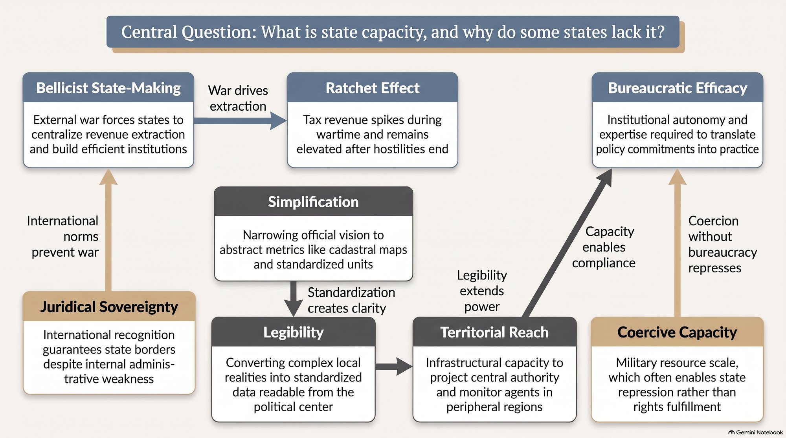
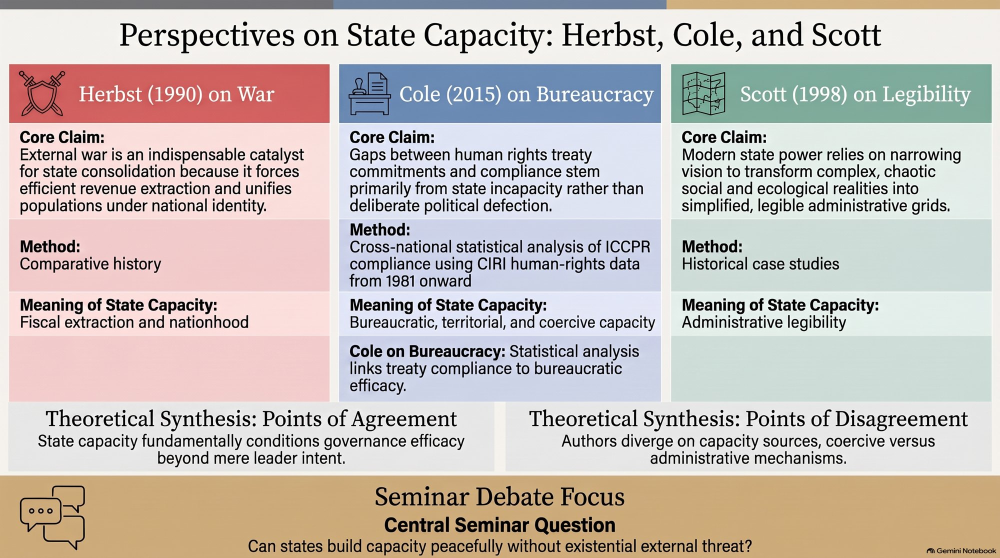
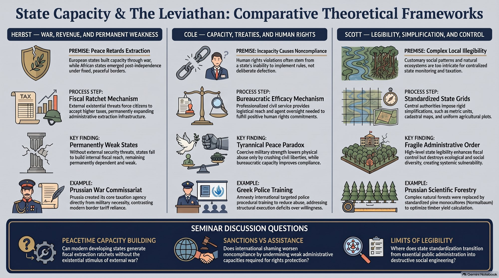

The Classroom · Weak Institutions · Class 5 · 10 Nov 2026
State Capacity
Why are some states unable to tax, govern or keep their promises? Herbst says peace and frozen borders let weak states survive without building capacity, Cole shows that capacity, not treaty ratification, drives human-rights compliance, and Scott shows what states have to simplify in order to see at all.
1 At a glance 30 seconds
Key questions
- Why did war build strong states in Europe, and why did peace leave many post-colonial African states weak?
- When a state fails to honour a treaty, is that unwillingness or inability, and which kind of capacity matters?
- What does a state have to simplify about society in order to see, tax and govern it, and what is lost in the process?
Key concepts
Ratchet effect
War-time taxes and revenue institutions persist after the war, leaving the state permanently stronger. — Herbst (1990)
Juridical sovereignty
Statehood guaranteed by international recognition and fixed borders (OAU, 1963) rather than by control of territory. — Herbst (1990)
Managerial vs enforcement school
Noncompliance as incapacity and ambiguity (Chayes & Chayes) vs noncompliance as wilful choice that needs sanctions. — Cole (2015)
Bureaucratic efficacy
Administrative quality and control of corruption; the capacity dimension that improves treaty compliance. — Cole (2015)
Territorial reach / coercive capacity
Infrastructure and presence across the territory / military personnel and spending; coercion does not improve rights compliance. — Cole (2015)
Legibility
The state's project of making society readable through standard grids: maps, measures, registers, surnames. — Scott (1998)
State simplification
Narrow, aggregate representations that let officials act on complex realities, and often damage them. — Scott (1998)
Tap a concept for its definition.
What you get out of it
- Capacity is not one thing: fiscal-extractive (Herbst), bureaucratic, territorial and coercive (Cole), and informational (Scott) dimensions can move independently.
- Formal commitments without capacity stay facades: ratifying the ICCPR has no independent effect on rights practices once capacity is accounted for.
- Coercive strength can substitute for administration, producing order without compliance (Cole's 'tyrannical peace').
- Seeing is a precondition for governing, but legibility schemes can destroy the local knowledge they replace (scientific forestry).
Cases and evidence
- Early modern Europe vs post-1945 Africa Herbst (1990)
Bellicist state-building vs peace under frozen colonial borders; African states drew 20.5% of revenue from trade taxes. - ICCPR compliance, cross-national panel Cole (2015)
Two-stage models of physical-integrity and empowerment rights (CIRI data) against three capacity dimensions. - German scientific forestry Scott (1998)
Mixed forest turned into Norway-spruce monoculture; yields collapsed in the second rotation (Waldsterben). - Metric system and cadastral maps Scott (1998)
Local measures and customary tenure replaced by standard units and freehold registers (e.g. Stolypin reforms, Torrens title).
The readings
| Jeffrey Herbst (1990) | War and the State in Africa · International Security 14(4): 117–139 Without existential war, African states never faced the pressure that forced European rulers to build tax states and national loyalty. |
| Wade M. Cole (2015) | Mind the Gap: State Capacity and the Implementation of Human Rights Treaties · International Organization 69(2): 405–441 Treaty compliance depends on bureaucratic capacity, not ratification; coercive capacity does not help. |
| James C. Scott (1998) | Seeing Like a State, ch. 1 'Nature and Space' · Yale UP, ch. 1 States govern by simplifying society into legible grids, which makes rule possible and can wreck what it simplifies. |
Where this fits in the course
This is the first class of Part B, Explaining Weak Institutions. Weeks 1–4 defined institutional strength as enforcement and stability, and traced what weakness does to democracy and development; this week asks the prior question of whether the state can enforce at all. The capacity lens set up here returns on 12 Nov (society's role), 17 Nov (discretion and street-level bureaucrats) and 26 Nov (forbearance, where a capable state chooses not to enforce).
- 1Recognizing Institutions
- 2The Strength of Institutions
- 3Institutional Weakness and Democracy
- 4Institutional Weakness and Development
- 5State Capacity
- 6Society's Role in Building State Capacity
- 7Delegation, Discretion, Ambiguity and Agency
- 8Non-Compliance
- 9Informal Institutions
- 10Forbearance
- 11Institutional Ambition
- 12Institutional Stability and Fragility
- 13Exogenous Institutional Strengthening
- 14Endogenous Institutional Strengthening
- 15In-class exam
2 Listen and look
Two takes on the same readings: pick the length that fits your commute.
The podcasts are moving to faster hosting and will be back here shortly.



3 Test your understanding
4 quick questions, then 2 to answer in your own words. Nothing is saved or sent.
According to Herbst, what removed the external pressure that built European states from post-colonial Africa?
Frozen borders and peace meant no existential threat, so no ratchet effect in revenue or national identity.
In Cole's findings, which capacity dimension improves compliance with human rights treaties?
Bureaucratic efficacy improves both kinds of rights; coercive capacity does not and can suppress empowerment rights.
What happened to German scientifically managed forests in Scott's account?
Monoculture stripped the forest's ecological complexity; the result was Waldsterben and costly 'forest hygiene'.
The 'managerial school' explains treaty noncompliance mainly as…
Chayes & Chayes see most noncompliance as inability, not wilful defiance, which is the view Cole tests.
Herbst and Scott both treat taxation and legibility as central to state capacity. How do their explanations of weak capacity differ?
Herbst explains weakness by missing incentives: without war, rulers had no reason to build extractive institutions. Scott focuses on the technique of rule: states need simplified, legible representations to govern, and the same simplifications can fail on complex realities. One asks why states build capacity; the other how capacity sees.
What is Cole's 'tyrannical peace', and why does it matter for the course's definition of institutional strength?
States with high coercive but low bureaucratic capacity can impose order while suppressing empowerment rights, so formal rules exist and violence is contained without real compliance. It shows that strength means enforcement of the rule as written, not just the state's ability to control.
Podcasts and infographics are generated with Google NotebookLM from the course readings; the brief and quiz are drafted with Claude from the readings and syllabus. Everything is checked and curated by me.